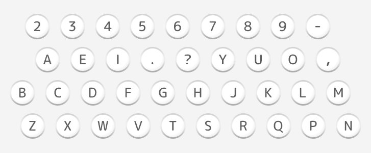
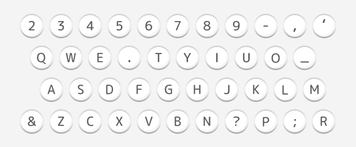
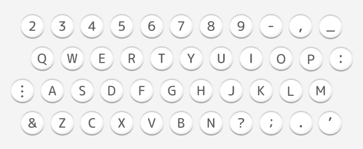
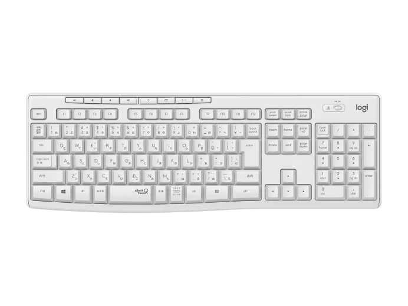

キーボードの歴史
年表
初期
- ピアノのような楽器型
1867年に作られた初期型のタイプライターは、楽器のキーボードタイプで配列はABC順でした。
上段：- 3 5 7 9 N O P Q R S T U V W X Y Z
下段：2 4 6 8 . A B C D E F G H I J K L M
中期
- ボタン式タイプライター(改善前)
ボタンの数は38個で、数字と大文字のアルファベット、いくつかの記号が打てる構造です。

＜課題＞
- モールス符号が打ちづらい
- 当時の年号が打ちづらい
- ボタン式タイプライター(改善後)
「当時の年号が打ちづらい」「モールス符号が打ちづらい」といった、2つの課題を乗り越え変化したのが、
このキーボード配列ですIとOが近くなり、年号が打ちやすくなりました。

さらに、ESZが斜めに配列されたことにより、モールス信号も打ちやすくなりました。
- QWERTY配列の原型
現在のキーボードの原型となる配列です。
タイプライターが TYPEWRITER と打ちやすくする為にこれらのキーが１列に配列されています。
しかし、記号や１と０のキーがなくまだつかいずらさが目立ちます

現在
- QWERTY配列
現在のキーボードです
多くの記号やファンクションキーが追加され実用的になりました。
また、下の写真のようにテンキーがついているキーボードも作成され文字だけでなく数字も打ちやすいように

改良されました。